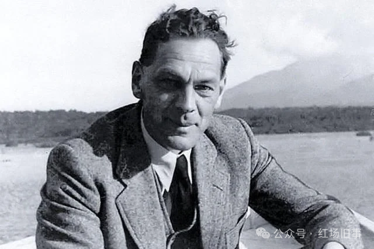
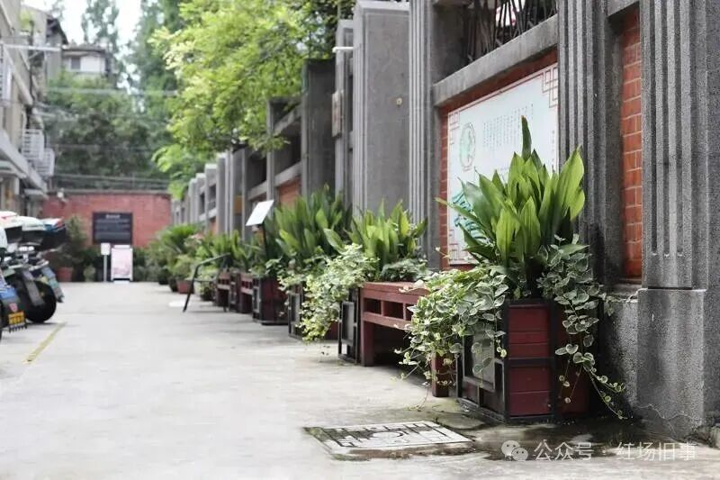
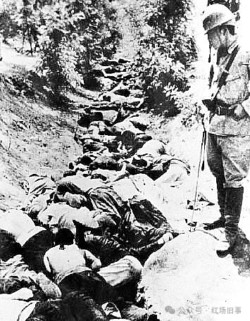
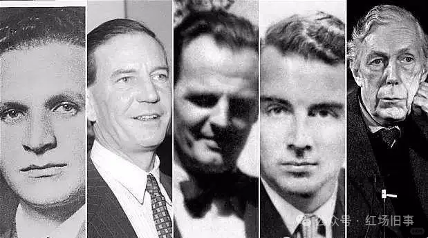

楔子：1937年上海法租界的深夜枪战
1937年1月初，上海法租界福煦路（今延安中路）一座洋楼外，五个黑影悄然逼近三楼。
房间里，一名白俄房客正在拍发电报。听见异响，他瞬间意识到危险——砸毁发报机，点火焚烧密码本。但来不及了。门被撞开，五名军统特工猛扑上来。白俄分子当即开枪拒捕，短促的对射中，他打死打伤军统特工各一人，自己也多处中弹。
在送往医院途中，因失血过多而死。
这个无名无姓的白俄发报员，死后留下了一个让戴笠整整三年睡不着觉的谜团。
他发出的电报内容被破译：西安事变后南京国民党上层的动态、对日主战派与妥协派的斗争、国共秘密接触的情况……
这不是中共地下党的密码，而是发给苏联远东情报机关的。军统分析：上海潜伏着一个“有国际背景”的高级间谍网，幕后指挥者尚未暴露。
这个人，就是后来被称为“红色谍王”的理查德·佐尔格。

“红色谍王”的理查德·佐尔格
一、上海潜伏：德国记者与“拉姆扎”小组
1930年1月，佐尔格以上海为第一站来到中国。他的公开身份是德国记者，研究中国银行业务，受德国化学会委托调查中国市场——这些都是真实的，也成了他最好的伪装。
在上海，他组建了后来闻名世界的“拉姆扎”情报网。成员来自多个国家：日本记者尾崎秀实、德国电台技术人员克劳森，以及一位特殊的中国助手——刘进中。
刘进中，化名“方文”，原本是与组织失联的中共地下党员，先为美国记者史沫特莱担任翻译，后被佐尔格发展加入情报网。
“拉姆扎小组”的活动基地选在虹口区山阴路。这里属于“越界筑路”区域——马路归租界管，弄堂深处归中国警察管，管理混乱，为情报活动提供了天然掩护。

虹口区山阴路
二、牛兰案迷局：与国民党的斗智斗勇
1931年6月，共产国际特工牛兰夫妇在上海被捕。这是震动国际的大案，牛兰掌握着共产国际远东局的全部秘密，一旦开口，后果不堪设想。
佐尔格接到任务：营救牛兰。
这是一场与中统特务头子徐恩曾的直接较量。徐恩曾认定牛兰背后还有更高级的指挥者潜伏在国民党上层，他猜对了——那个人就是佐尔格。
佐尔格派刘进中设法与狱中的牛兰取得联系。刘进中通过关系传递消息，最终获得了牛兰亲笔写的俄文字条，确认他还活着、没有叛变。
随后，一场国际舆论风暴被引爆。佐尔格通过史沫特莱联系上宋庆龄，爱因斯坦、高尔基、罗曼·罗兰、杜威、萧伯纳等国际知名人士纷纷致电声援。国内，宋庆龄任主任的“牛兰夫妇上海营救委员会”成立，成员包括鲁迅、蔡元培、林语堂、史沫特莱、斯诺。
蒋介石最初态度强硬，但宋庆龄开出了一个他无法拒绝的条件：释放牛兰，苏联可以放还身在苏联十年的长子蒋经国。蒋介石在日记里写道：“余宁使经国不还，或任苏俄残杀，而决不愿以害国之罪犯以换亲子也。”
1932年7月，牛兰夫妇被判无期徒刑。虽然未能直接获释，但保住了性命——后来他们于1937年日军轰炸南京时趁乱逃脱，辗转回到苏联。
但佐尔格付出的代价是：他被盯上了。
三、戴笠追捕：“七次化险”的惊险细节
1932年5月，佐尔格向莫斯科发电：“我的身份已经受到怀疑。”
徐恩曾手下有一批白俄线人，其中一位名叫巴尔柯夫。此人在上海滩经营一家俄式酒馆，与黑社会、租界工部局、捕房都有联络。他向中统报告：有一个伪装成白俄分子的苏联情报员，正在为佐尔格工作。
这个人就是前面那位死在枪战中的发报员——别列也夫。
巴尔柯夫还发现，别列也夫定期在咖啡馆与一个日本人碰头，那个日本人背后还有一位欧洲某国驻华领事馆的官员——中等身材，壮实精悍，能说英、日、德语。
徐恩曾拿到了那人的背影照片，但认不出是谁。
他不知道，那就是佐尔格本人。
就在徐恩曾准备收网时，巴尔柯夫和妻子突然死于一场“车祸”，肇事车趁夜色逃之夭夭。徐恩曾知道：对手先下手了。
据解密档案记载，佐尔格在上海期间至少经历七次险情——被盯梢、被跟踪、住处被监视，但他每次都能化险为夷。国民党警察的监视报告写道：佐尔格很少回家，“常与朋友下棋，接电话时非常小心，尽量不让别人听到”。
1932年11月12日，佐尔格从上海启程前往日本。临走前，他销毁了所有可能暴露的证据。十天后，莫斯科收到电报：“拉姆齐已安全抵达海参崴。”
四、南京大屠杀证据：一个鲜为人知的贡献
1937年12月，日军攻占南京，制造了惨绝人寰的大屠杀。

12月29日，佐尔格再次来到南京。他搭乘日本大本营陆军情报局专机，以德国大使馆公务的名义飞抵这座正在燃烧的城市。
在飞机上，佐尔格看见长江上漂浮着成千上万具尸体，“汹涌江水为之染赤”。
出于义愤，他多次上街制止日军暴行。更重要的是，他利用自己的身份做了一件事：在德国大使馆内，他鼓动三秘克劳森、签证科长汉斯等人，将日军烧杀掳掠、奸淫妇女、活埋平民的证据放进外交邮袋，设法送回德国外交部。
这些材料最终呈到希特勒案头。尽管纳粹德国与日本是盟友，但里宾特洛甫还是照会日本政府，要求“注意日军在南京无休止的暴行可能在国际上产生的负面影响”。
佐尔格在中国做的最后一件事，是为人类留下了一段历史证据。
档案佐证：俄罗斯与中国的解密档案
俄罗斯国家档案馆保存着佐尔格1932年发给别尔津的密电原件：“我们现在的处境已不允许我们再从事这方面的联络活动。请指示，是否一定要等到接替人选来了才能撤离？”
中国方面，军统档案记载了1937年那场枪战的全过程。破译的密电码内容被详细记录：关于西安事变后国民党高层动态、国共接触情报，证明这个电台直接向苏联远东情报机关发送情报。
中统档案中，还保留着徐恩曾向蒋介石汇报“白俄分子被杀案”的记录，以及蒋批示“与军统合作，尽快破案”的手谕。
互动推理
佐尔格在中国的情报生涯，至今仍有诸多争议：
你认为，佐尔格在中国最关键的情报贡献是什么？
一、是营救牛兰夫妇保住了共产国际的秘密？
二、是获取国民党高层动态让莫斯科掌握中国政局？
三、还是最后促成南京大屠杀证据得以保存？
欢迎在评论区分享你的推理。
下一期预告：剑桥五杰——英国精英为何为苏联效力三十年
他们不是被收买的间谍，而是主动选择信仰的理想主义者。下期走进剑桥五杰的传奇人生。

伯吉斯、麦克林、菲尔比、布朗特、凯恩克罗斯